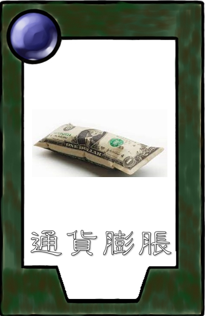

10點血量，血量歸零則落敗
初始3張，每回合抽1張，最多5張。排堆內有各種卡牌各三張，抽完為止
用來出牌，前1~5回合分別獲得1~5點費用，之後每回合獲得5點費用。每回合結束時若費用多於5點，將扣到剩下5點
卡牌放到戰鬥區始可參與攻防，最多5張
| 卡牌 | 費用 | 血量 | 攻擊 | 功能 |
|---|---|---|---|---|
| 蔡英文 | 30 | 10 | 一次可以攻擊兩個單位 | |
| 蘇貞昌 | 2 | 5 | 2 | 戰鬥區同時存在蘇貞昌、游錫堃、許宗力時，消耗這三張卡牌召喚蔡英文 |
| 游錫堃 | 2 | 5 | 2 | 戰鬥區同時存在蘇貞昌、游錫堃、許宗力時，消耗這三張卡牌召喚蔡英文 |
| 許宗力 | 2 | 5 | 2 | 戰鬥區同時存在蘇貞昌、游錫堃、許宗力時，消耗這三張卡牌召喚蔡英文 |
| 陳時中 | 3 | 3 | 2 | 上場時戴著口罩，可以抵擋三次攻擊不受傷害，抵擋攻擊時消耗口罩數量 |
| 韓國瑜 | 2 | 3 | 1 | 發大財，在場上時錢包上限+1 |
| 陳其邁 | 5 | 5 | 1 | 選市長，上場時使敵方戰鬥區的一個單位換到我方戰鬥區 |
| 柯文哲 | 3 | 5 | 2 | 蓋大巨蛋，上場時己方全體下回合不能被攻擊 |
| 高嘉瑜 | 3 | 5 | 2 | 美妙歌聲，每次攻擊敵人時自己不會被對方攻擊 |
| 馬英九 | 3 | 5 | 1 | 反萊豬，對綠色陣營的敵人攻擊力+2 |
| 陳水扁 | 3 | 3 | 1 | 抖抖手，上場時手滑多抽一張牌 |
| 侯友宜 | 1 | 3 | 1 | |
| 王世堅 | 3 | 5 | 1 | 死亡時跳海，使場上友軍攻擊力+2 |
| 邱威傑 | 3 | 5 | 1 | 夾斷筷子愈夾愈勇，每次攻擊後攻擊力+1 |
| 蘇慧貞 | 2 | 5 | 1 | 蓋網球場，在場上時戰鬥區上限+2 |
| 同志遊行 | 1 | 使場上所有綠色陣營卡牌血量+1 | ||
| 中天新聞 | 2 | 使蔡英文當前血量減半 | ||
| 假新聞 | 2 | 對1張卡牌造成5點傷害 | ||
| 通貨膨脹  | 3 | 對方下回合每個行動都要多花費1點費用 | ||
| 大地震 | 3 | 場上所有卡牌血量-5 |